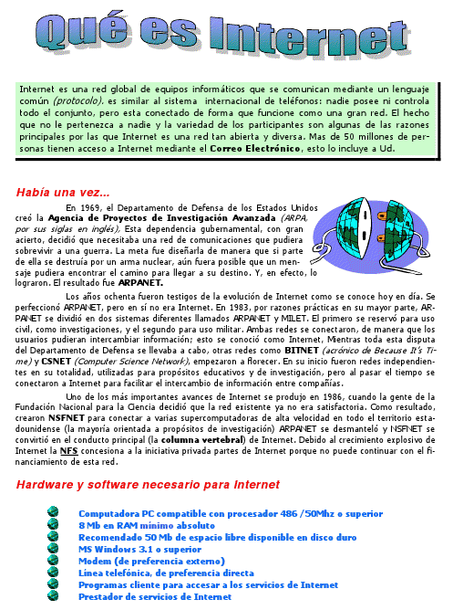

1. Introducción

La práctica de hoy consiste en formatear con Word 2010 un texto que os proporcionaré por correo electrónico, junto con unas imágenes. Tenéis que conseguir visualizarlo igual que en la hoja ya formateada que os daré.
2. Resultado final
El texto final debe quedarmos aproximadamente como éste.
